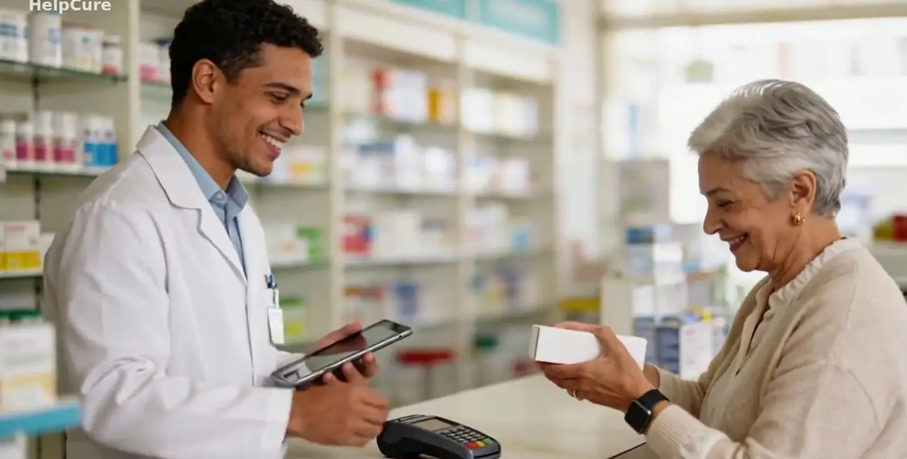
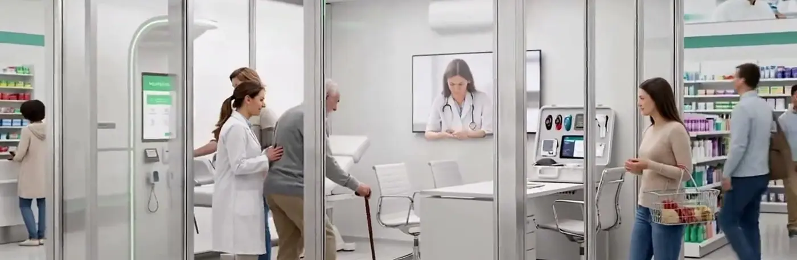
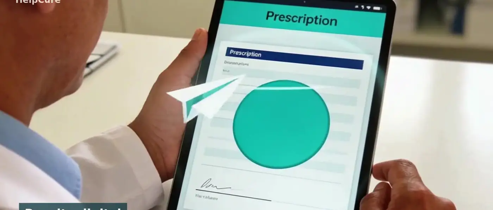
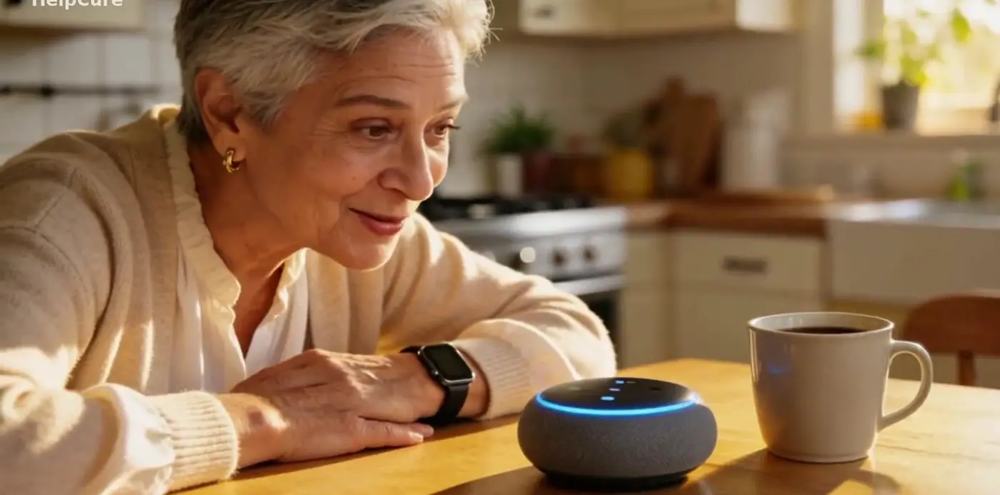
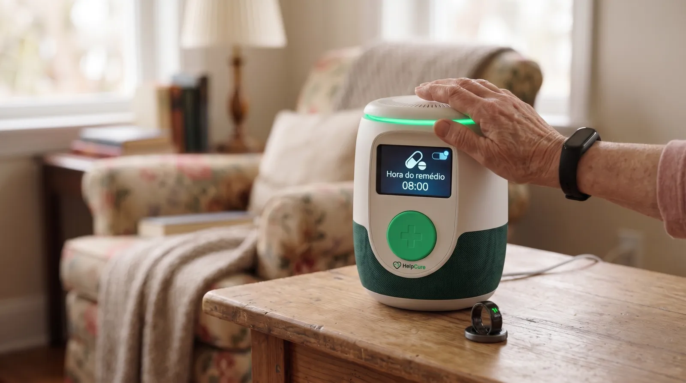
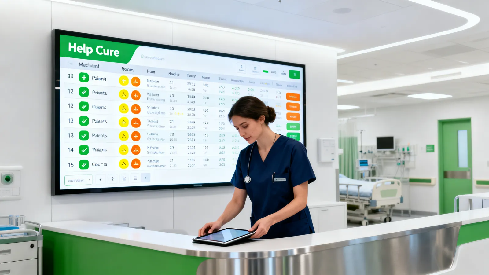
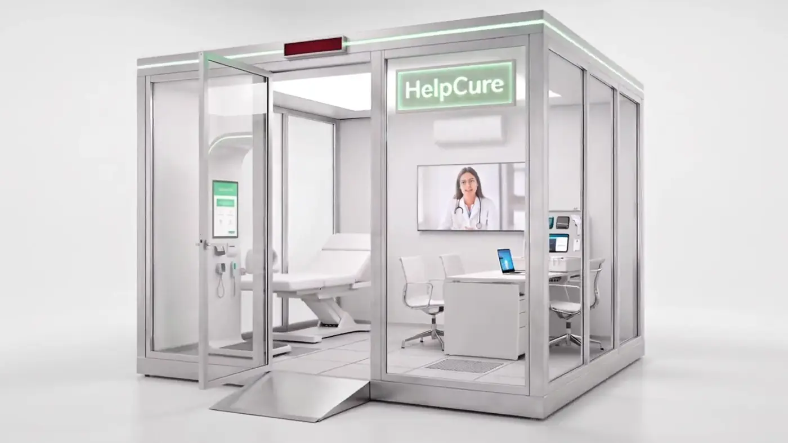

Soluções / Farmácia
A farmácia como ponto de cuidado.
Perto do paciente todos os dias: confere a receita, registra a dispensação, mede a pressão e ajuda o tratamento a não parar.
Receita, compra e acompanhamento no mesmo histórico.
Receita digital
O farmacêutico vê a receita do paciente no Help Cure.
Dispensação registrada
A compra é confirmada e os lembretes de dose começam.
Medição no balcão
Pressão e outros sinais medidos na farmácia entram no histórico.
Reposição
Quando o remédio está acabando, a farmácia pode oferecer a reposição.
O que a farmácia ganha.
- Adesão ao tratamento — Lembretes e confirmação de doses reduzem o abandono do remédio.
- Fidelização — O paciente volta à farmácia que acompanha o tratamento dele.
- Célula na farmácia — A célula de atendimento pode ser instalada dentro da loja, com triagem e teleconsulta.
- Mesmo histórico — O que é registrado na farmácia aparece para o médico e o hospital.



Para quem dispensa e orienta.
Redes de farmácias
Serviço de cuidado como diferencial em todas as lojas.
Farmácias de bairro
Relação próxima com o paciente, agora com dados.
Farmacêuticos
Orientação baseada no histórico e na adesão real.
Tudo ligado ao mesmo histórico.

Paciente e família
App, lembretes de remédio e resumo de emergência no bolso.
Saiba mais →
Hospital e clínica
Sinais vitais direto no sistema e a família informada.
Saiba mais →Home care
O cuidado continua em casa depois da alta.
Saiba mais →
Célula de atendimento
Sala de 9 m² com triagem e teleconsulta, onde as pessoas estão.
Saiba mais →Unidade móvel
Triagem e duas cabines de teleconsulta sobre rodas.
Saiba mais →